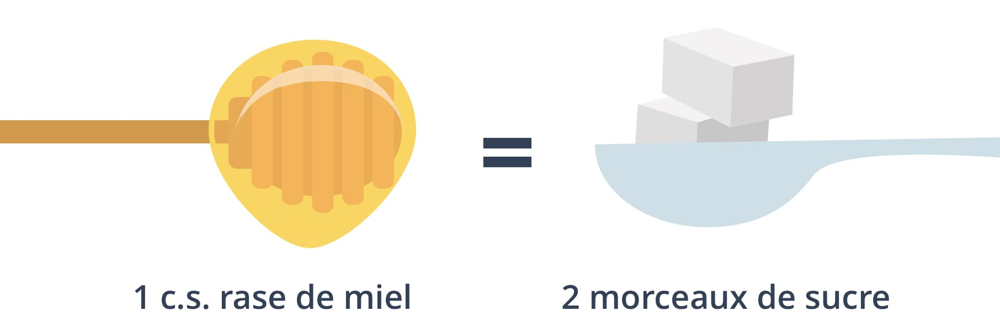

La fabrication du miel par les abeilles est un des grands miracles de la nature : pour produire 500 grammes de miel, les abeilles doivent butiner 8 millions de fleurs. Ces dernières années, la consommation de miel a explosé et le miel est même devenu un argument marketing à la mode. Mais mérite-t-il vraiment sa réputation ? Quels sont ses bienfaits et comment être sûr de choisir un miel de qualité ? Avec l’aide du nutritionniste Anthony Berthou de La santé par la nutrition, on vous livre tout sur le précieux liquide doré.
Le miel, une bonne alternative au sucre de table
Contrairement au sucre de table, le miel est un produit pur qui ne subit pas de transformation. Pour produire le miel, les abeilles butinent le nectar des fleurs puis se le transmettent d’abeille en abeille à l’intérieur de la ruche. Le nectar est alors peu à peu “digéré” et enrichi par les enzymes que chacune d’entre elles sécrète. Grâce à ce processus, le miel est riche en minéraux (magnésium, calcium, potassium, fer) et en vitamines (B et C), même si les quantités restent faibles. À l’inverse, le sucre de table subit un processus de raffinage qui détruit tous ses nutriments.

Les rem√®des de grand-m√®re conseillent d‚Äôajouter du miel √† son infusion pour gu√©rir √† peu pr√®s tous les maux ‚Ķ et nos mamies ont loin d‚Äôavoir tort ! Le miel est un puissant antiseptique qui va ralentir la prolif√©ration des bact√©ries. Une cuill√®re de miel quotidienne en p√©riode de maladie peut aider √† se d√©barrasser d‚Äôun vilain rhume. Il va aussi apaiser les irritations et toux en d√©posant une paroi protectrice dans la gorge. Mention sp√©ciale pour le miel de manuka, dont les vertus uniques permettent de l’√©lever au rang de ‚Äúsuper aliment‚Äù, qu‚Äôon utilise m√™me en m√©decine pour ses vertus cicatrisantes.
Le miel est également moins calorique que le sucre de table et il possède un pouvoir sucrant 30% à 40% supérieur au sucre de table : on peut ainsi se permettre d’en mettre moins. Enfin, le miel est aussi connu pour sa teneurs en antioxydants, des molécules qui aident à prévenir le cancer et les maladies dégénératives. Plus le miel est foncé (comme le miel de sarrasin ou le miel de châtaignier), plus il est riche en antioxydants ! Cependant, le pouvoir antioxydant de la plupart des miels reste relativement faible par rapport à celui des fruits et légumes.
Le miel, c’est 80% de sucre
Si l’on confère toutes ces vertus au miel, il ne faut pas oublier que dans 100 grammes de miel, il y a au moins 80 grammes de sucre ! Tous les miels ne se valent pas, car leur composition dépend de l’origine du miel et des fleurs butinées par les abeilles. Mais, en moyenne, une cuillère à café de miel (8g de sucre) représente 30% de la consommation journalière maximale recommandée par l’OMS.  

Selon son origine, le miel est compos√© d’environ 55% de fructose, un sucre naturel qui est aussi celui que l‚Äôon trouve dans les fruits. Si le fructose peut sembler un bon argument en faveur du miel, il faut en r√©alit√© savoir que seul notre foie est capable de m√©taboliser le fructose¬†(voir notre article sur le sucre), √† l’inverse d’autres sucres comme le glucose qui peuvent √™tre utilis√©s par le foie mais aussi par les muscles et le cerveau. Or, notre alimentation quotidienne contient d√©j√† trop de fructose par rapport √† la capacit√© de notre foie √† le traiter. En effet, le fructose est ajout√© dans de nombreux produits industriels (c√©r√©ales, pizzas, g√¢teaux, sauces…). Lorsque le fructose est en exc√®s dans notre organisme, il va alors √™tre directement stock√© dans le foie sous forme de graisses. Ce syndrome du ‚Äúfoie gras‚Äù augmente ainsi les risques de diab√®te et favorise la r√©sistance √† l‚Äôinsuline.
Le miel ne résout pas non plus le problème de l’addiction au sucre. Tout comme le sucre de table, il active dans notre cerveau le circuit de récompense, qui va nous pousser à consommer à nouveau des produits sucrés.
Finalement, le miel vaut toujours mieux que le sucre, nutritionnellement comme gustativement … mais tout est dans la juste mesure ! On peut tout à fait intégrer le miel dans le cadre d’une alimentation équilibrée, mais on le fait avec modération et en surveillant ses apports globaux en sucres (et notamment en sucres cachés, que l’on trouve dans les produits transformés).
Comment bien choisir son miel ?
Les aliments naturels √©tant en vogue ces derni√®res ann√©es, le miel conna√Æt un succ√®s sans pr√©c√©dent : rien qu‚Äôen 5 ans, la demande mondiale a augment√© de 60% ! Malheureusement, cette demande colossale a eu pour cons√©quence d‚Äôouvrir le march√© √† l‚Äôimportation massive de miels trafiqu√©s, qu‚Äôon appelle les miels frelat√©s. Le plus souvent, ces miels ont √©t√© dilu√©s avec des sirops de sucre, du glucose commercial ou de l‚Äôeau. Selon des tests r√©alis√©s en 2015, pr√®s d‚Äôun tiers des miels vendus en Europe seraient frelat√©s, donc frauduleux ! ¬†Les pays asiatiques, l‚ÄôEspagne et l‚ÄôUkraine sont malheureusement connus pour l’exportation de miels non r√©glementaires √† bas prix.

Mais comment √©viter ces miels frelat√©s ? Tout d‚Äôabord, il faut d√©laisser les produits comportant la mention ‚ÄúM√©lange de miels UE et hors UE‚Äù dont la tra√ßabilit√© est faible : ils ne garantissent pas que le miel respecte les crit√®res europ√©ens qui imposent que l’appellation ‚ÄúMiel‚Äù ne s‚Äôapplique que pour du miel pur. Le prix est √©galement un bon indice pour d√©tecter les miels frelat√©s : un miel trop bon march√© (√† moins de 10‚Ǩ le kilo), devrait vous mettre la puce √† l‚Äôoreille. Malheureusement, le gouvernement a refus√© d’inscrire dans la loi sur l’alimentation (Egalim) l’√©tiquetage obligatoire du¬†(ou des) pays d‚Äôorigine du miel.
L’idéal est de consommer du miel produit en France. La législation française est plus stricte que les réglementations européennes, et garantit un produit très contrôlé.
Par ailleurs, il est essentiel de choisir un miel bio, pour votre santé comme pour la survie des abeilles ! En effet, les fleurs butinées pour produire le miel sont susceptibles d’être contaminées par les pesticides chimiques utilisés en agriculture. Ces pesticides vont à leur tour contaminer le miel et mettre en danger les abeilles. À l’achat, on privilégie un miel qui  dispose du label bio français (Agriculture Biologique) et/ou européen (Eurofeuille), qui garantissent une production de miel sans traitement chimique et respectueuse de la faune et de la flore. Les labels Nature & Progrès et Demeter sont encore plus exigeants, notamment sur la qualité des lieux de butinage des abeilles (zones sauvages et biologiques).

Acheter respectueusement, c’est sauver les abeilles !
S’il existe autant de fraudes sur le marché, c’est malheureusement parce que l’offre de miel n’arrive plus à suivre la demande. La surexploitation des ruches, les maladies parasitaires, la destruction de la biodiversité ainsi que l’usage intensif d’insecticides sur les cultures sont les facteurs d’un déclin dramatique des abeilles. La France et la Belgique sont les deux pays européens où les abeilles meurent le plus, avec 30% de disparition des colonies chaque année. La production de miel est donc impactée : entre 1990 et aujourd’hui, la quantité de miel produit en France a diminué de 50%.

Par ailleurs, si on a la chance pouvoir profiter des vertus du miel, il est aussi bon de rappeler que le miel est la nourriture des abeilles, et qu’elles le produisent en vue de faire leurs provisions pour l’hiver ! En ne laissant aucun miel aux abeilles pendant la saison hivernale, certains apiculteurs déciment la colonie. Or, les abeilles sont indispensables à la survie de la majorité des fleurs et espèces végétales, et donc de la production de céréales, fruits, légumes, noix, épices, cacao, café, etc. Ainsi, c’est 35% de la production alimentaire mondiale que l’on doit aux abeilles et qui risque de disparaître avec elles.
Le miel est un produit extr√™mement pr√©cieux qu‚Äôil est donc important d‚Äôacheter en connaissance de cause. Pour cela, on favorise une apiculture respectueuse des abeilles, de leur √©cosyst√®me et de l‚Äôenvironnement. Il est m√™me aujourd‚Äôhui possible de parrainer une ruche en France pour favoriser la prolif√©ration locale des abeilles, par exemple gr√¢ce au mouvement Un Toit pour les abeilles, ou encore √†¬†L’Association M√©c√®nes et Parrains d’Abeilles (AMPA)¬†.

Comment savoir????
Bonjour,
Article tr√®s interessant, juste une petite question concernant le dernier paragraphe. Il est dit qu’en France et en Belgique chaque ann√©e, 30% des colonies meurent. Doit-on comprendre que dans environs 3 ans il n’y aura plus d’abeilles dans ces 2 pays? Y a-t-il une r√©g√©n√©ration des essaims? O√π importe-on des colonies pour compenser ses pertes?
Bonjour Blomy.
Je vous remercie infiniment de nous informer les bonnes qualités de certains produits de la même marque.
Cela est rassurant pour notre alimentation. Nous savons ce que nous mangeons dans notre assiete.
Bravo et félicitations pour ces renseignements enrichissants et intéressants.
Rubis LOKHANDWALA
Ne serait-ce pas le NECTAR au lieu du POLLEN sur l’image plus haut que les abeilles s’√©changeraient pour produire le miel ? üòâ
Sinon d’avis d’un expert chinois en novembre 2019, cela serait plutot pr√®s de 70% des miels qui seraient faux en europe … donc exit les miels sans tra√ßabilit√© et les mention ¬´¬†EU et NON EU¬†¬ª que l’on retrouve m√™me √† Madagascar puisque les europ√©ens n’en veulent plus üôÅ
Merci pour votre énergie et votre professionnalisme.
Merci. Cet article est très intéressant et éclairant.
Bonjour,
Toutes ces informations sont exactes et très intéressantes mais il manque un détail très important dans le dernier paragraphe.
Comme nous pouvons le constater en consultant les sites de ces associations de parrainage qui soutiennent des apiculteurs qui comme tous les apiculteurs non biologiques, aujourd’hui, utilisent des ruches √† cadres et traitent leurs colonies √† l’amitraze. Renseignez-vous sur ce neurotoxique qui est utilis√© pour traiter la varroose, du nom de ce parasite, Varroa destructor, qui d√©cime les essaims europ√©ens depuis plusieurs ann√©es. Ce neurotoxique √©tait utilis√©, il y a quelques ann√©es, dans des produits pour les traitements des poux √† l’√©poque o√π nous √©tions peut-√™tre encore que des enfants. Il est aujourd’hui interdit pour le traitement des poux, pour les cons√©quences qu’il a pu provoquer mais il n’est pas interdit dans nos ruches, m√™me en France.
Ce neurotoxique engendre plusieurs probl√®mes, notamment chez l’abeille et in√©vitablement chez l’√™tre humain.
N’h√©sitez pas √† me contacter pour plus de pr√©cisions. Je vous remercie pour l’int√©r√™t que vous porterez √† ce sujet. Nous pouvons aussi nous rencontrer pour en discuter.
Je ne suis pas sur Facebook je ne peux pas m’inscrire ! Mais j’appr√©cie beaucoup YUCA vous √™tes de bon conseil ayant le diab√®te je dois faire attention merci YUCAü§îüëçüôã‚Äç‚ôÄÔ∏è
Grand merci pour vos informations vitales et √©ducatives. Dans quel cas le miel est- il chauff√© par l’apiculteur?
Un grand Merciü§ópour votre travail…!
Bonsoir, j’ai du mal √† vous croire car j’ai achet√© du miel venant d’apiculteurs l’application me dit qu’il est m√©diocre, donc je prends un autre miel venant d’Espagne, du miel d’oranger et l’application me marque bon alors il faudrait me dire o√π est l’erreur merci
Car le miel c’est sucr√© donc m√©diocre pour la sant√© il faut en consomm√© a petite dose c’est comme tout, qu’il soit bio ou pas
Merci infiniment blomy pour toutes les informations que vous nous fournissez
Un grand Merciü§ópour votre travail…!
Excellentes informations ! V
ous êtes des acteurs indispensable pour nous rendre responsables de la préservation de notre planète et surtout celle des générations futures. Merci beaucoup et continuez dans ce sens sans rien lâcher pour faire surtout évoluer les décisions des autorités des pays du monde entier !!!
Merci blomy
Vous conseillez de manger du miel bio. Qu’appelez vous miel bio exactement? J’ai d√©j√† vu nombre de miels √©tiquet√©s bio, mais comment peut on contr√¥ler que les abeilles, capables de parcourir des dizaines de kilom√®tres pour trouver du pollen, ne butinent que des fleurs non contamin√©es par des pesticides? Je pense r√©ellement que l’appellation bio pour le miel n’est qu’un argument de vente et non pas une r√©alit√©… D’autant que m√™me si le rucher est entour√© de cent kilom√®tres de cultures et √©levages bio, on sait que les vents peuvent transporter des produits sur des milliers de kilom√®tres…
Je suis d’accord c’est ce qui me d√©range avec le ¬´¬†bio¬†¬ª car on sais qu’il qu’il n’y a pas d’ajout de pesticide ou autre mais au final il y a en quand m√™me.. c’est comme ce qui pousse dans les champs on ne sais pas comment sont les nappe freatique finalement…
Merci, car je cosomme beaucoup
de miel. J’ai bien appr√©ci√© vos conseils.
Merci Blomy pour ces pr√©cieuses informations. C’est clair, net et pr√©cis.
très satisfaite d avoir créé l application Yuca car très utile ns donne des informations super interessantes et impotantes a savoir merçi
Moi je mange environ 5 kilos miel de Sahara tout les mois ,je me porte bien,merci
Est ce que acheter du üçØ miel Bio en Vrac d origine Espagne d’ un magasin qui vend que de produits Bio,.,,, Bio cop,,, peut √™tre m√©langer avec le sero
Merci pour cette explication bien d√©taill√© sur le vrai üçØ miel
Comment participer à soutenir un toit pour les abeilles
Le probl√®me de ne pas noter le miel, c’est que certains miels viennent de tr√®s loin et une bonne partie d’entre eux ont du sucre ajout√©
Bonjour , ma photo d une bouteille de sirop d agave bio( sunny) ne peu être noter la raison vous notez pas le miel ? Pouvez vous m expliquer merci bon dimanche
Vos articles sont toujours très intéressants et Blomy demeure un allié fidèle de mes courses alimentaires et cosmétiques. Merci pour votre beau travail !